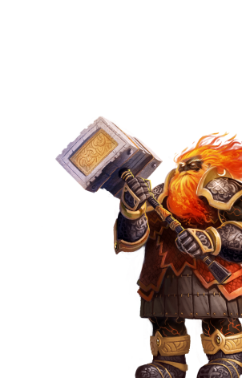

Северные кланы
Яростные воины, трудолюбивые кузнецы и мастера рунной магии, гномы с подозрением относятся к чужакам. Они надзирают за демонами (ибо живут неподалеку от ядра Асхана, где Асха держит в заточении Ургаша), и недолюбливают темных эльфов, с которыми постоянно борются за подземные территории.
Другие имена: гномы
Основные цвета: Огненно-красный, серо-стальной
Страна/Королевство: Гримхейм, Королевство под Горой, также известное как Каменные Чертоги
Столица: Тор Мирдал, Огненная Крепость
Религия
Гномы поклоняются Аркату, дракону огня. Они с огнем давно на «ты», и их единение – глубоко личный ритуал, который не видел практически никто из чужаков. Практически любой ритуал включает в себя уголь и кузнечные меха. Ритуальное клеймение – часть обряда взросления, оно подчеркивает веру Гномов в то, что душу можно перековать, как металл.
Магия
Гномы в основном используют магию огня – безжалостные чары, порабощающие слабых, но дающие силу и укрепляющие волю сильных духом. Кроме смертоносных огненных заклинаний у гномов есть и такие, которые укрепляют силу воинов, помогают создавать предметы и осаждать города.
Рунные письмена используются в обществе гномов повсеместно, и многие гномы наносят на свои тела рунические татуировки. Каждая руна соответствует заклинанию, это открытый канал между телесным миром и миром духов. Руны позволяют передавать их носителям некие физические свойства предметов.
Руны позволяют передавать их носителям некие физические свойства предметов.